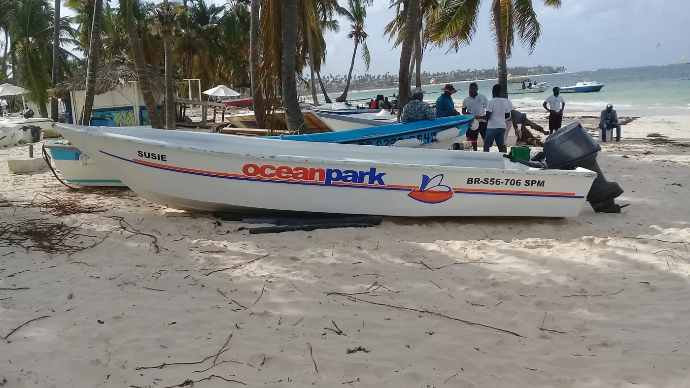
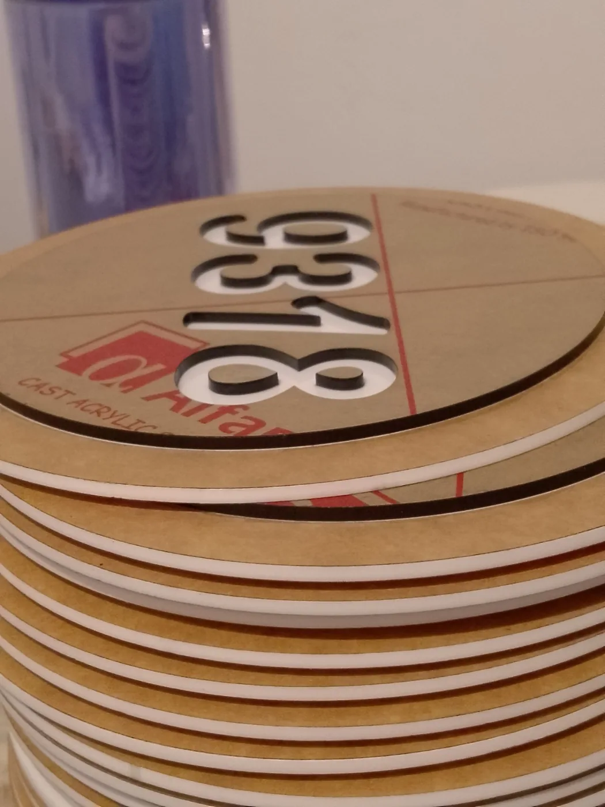
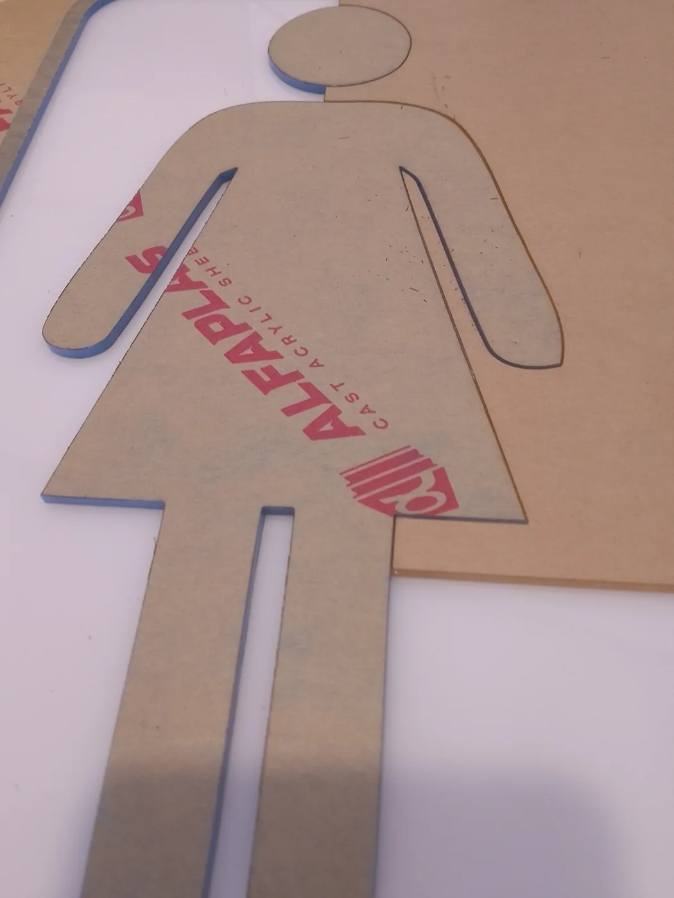
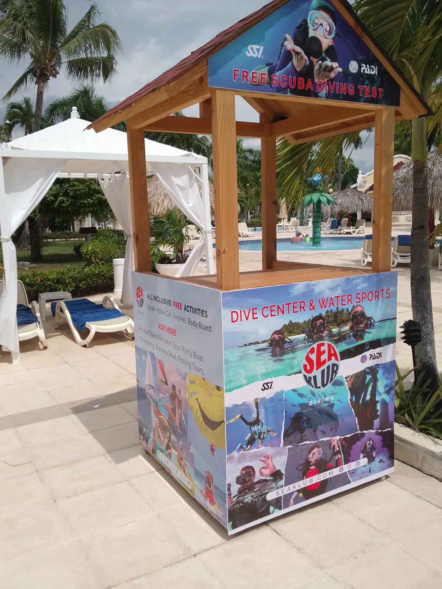

Soluciones
De tu necesidad
a una solución física.
Diseño y fabricación para identificar, orientar y comunicar.
Cada solución se desarrolla según su aplicación, medidas, materiales, acabado y condiciones de instalación.
Rotulación y publicidad gráfica

Tu marca, presente en el espacio.
Aplicaciones gráficas y elementos de identificación para comunicar tu negocio.
Rótulos · Letras dimensionales · Publicidad gráfica
Señalización e identificación

Cada espacio, bien identificado.
Piezas para orientar, numerar e identificar áreas en hoteles, obras y negocios.
Habitaciones · Directorios · Identificación de áreas
Acrílico y fabricación personalizada

Piezas que se adaptan a tu idea.
Diseño y fabricación de elementos personalizados, con corte y grabado láser CO₂ según el material y el proyecto.
Exhibidores · Placas · Elementos a medida
Diseño gráfico aplicado

El diseño es donde empieza la pieza.
Diseño gráfico destinado a convertirse en señalización, rotulación, placas, impresión y gráfica aplicada a espacios.
Composición · Gráfica aplicada · Diseño para producción
¿Qué necesita tu espacio?
Cuéntanos qué quieres identificar, orientar o comunicar.